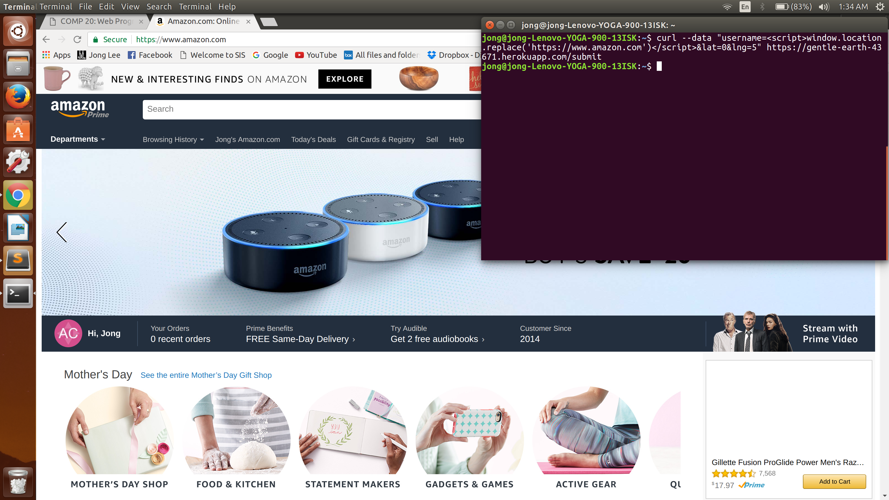

The product I am working with is an Uber style application. On the client side, a passenger/driver will use geolocation services to send data about their location to a server and the server will send all vehicles/passengers seen within the area in the last 5 minutes. On the server side, information about both the passenger and the vehicle are stored in two separate databases. The client is able to send information to be stored in the database, view a list of all passengers, and view a vehicle by inputting its username. I was hired to find as many security and privacy problems using tools such as curl and Tamper Data.
I first tried performing attacks without looking at the source code. The first tool I used for pen testing was curl on the terminal for an injection attack. I input the data as a script so that I can modify the page however I wanted. Another method for pen testing was to access the page from an application/site via an XMLHTTPRequest that the product would not want to give data to. I then looked at the source code and looked for security/privacy issues in the code itself and tried pen testing again.
-The first issue I found was that I can input data in a way that when it gets sent to the server, I can change what gets displayed on the server page by making my input data as script/code.
-The second issue is that anyone can access data from the server. In an app like Uber, only passengers and drivers should have access to certain data. However, the code allows for any application to obtain data.
-The final issue is that the code for the server-side has a list of all the vehicle names. I can then disguise myself as a vehicle and retrieve data of all the passengers.
Issue: I can use curl to input any data in the POST /submit on the server. When I then access the index.html page, I can modify the page however I want by inputting script as data.
Location: In the index.js file in the post method via gentle-earth-43671.herokuapp.com/submit
Severity of issue: This is a very serious security issue because a client can input script as data and pretty much change the entire site to whatever he/she wants.
Description of issue: (Found in lines 33-35 of index.js)
The lack of filtering the input data allows the user to input any type of data, the most harmful of which is writing script
Proof of vulnerability:

For example, the user can input data so that the site redirects to any other site that he/she wants.
Resolution: One resolution is to remove all special characters from the user input. For example, if username is a variable that is modified by user input, then we can do "username=username.replace(/[^\w\s]/gi, '');".
Issue: The code allows for cross-origin resource sharing and is written so that any site can access data from the server. In this Uber-like product, other sites should not be allowed to see where certain passengers/vehicles are.
Location: In the index.js file enabling CORS
Severity of issue: This is a very serious security/privacy issuse because it allows other apps to access data from a database that is only meant for people using the app. For example, someone could create an different app that gets all the data from this server and use it to their advantage.
Description of issue: (Found in line 27 of index.js)
Proof of vulnerability:
I created a html page that retrieves data from this server and I can now use it however I want.
Resolution: To resolve this, don't set "Access-Control-Allow-Origin:" to "*" or "null" but specify to only apps you want to give access to.
Issue: In the code for the server-side, a list of all the vehicle usernames is present. Hence, even if a user isn't a driver, they can curl data as a vehicle so they get a list of information on all the passengers.
Location: In the index.js file having an vehicle array of all driver usernames
Severity of issue: This privacy issue is fairly severe because like Uber, only drivers should be able to see other passengers. If a random person can access the location of all passengers, then this can become very dangerous. No one wants anyone other than the driver to know their location everytime they call an Uber.
Description of issue: (Found in line 49 of index.js)
Proof of vulnerability:

I can just curl data as a vehicle so I get a list of all passengers even though I'm not a driver.
Resolution: To resolve this issue, we can encrypt the usernames of all the vehicles.
-NEVER TRUST USER INPUT. This is fairly simple to do by removing all special characters from the input
-Don't use CORS so that anyone can access the server. This can be tricky because there are cases where you don't know exactly who you want to give permission to
-Encrypt personal data in the source code.
-Piazza
-https://stackoverflow.com/questions/12001269/what-are-the-security-risks-of-setting-access-control-allow-origin
-http://www.w3.org/wiki/CORS_Enabled